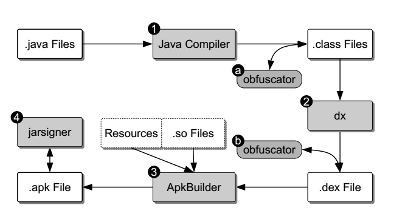
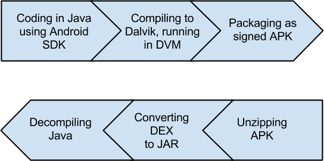
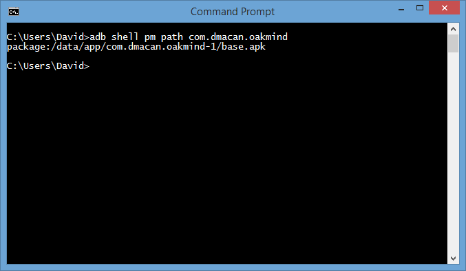
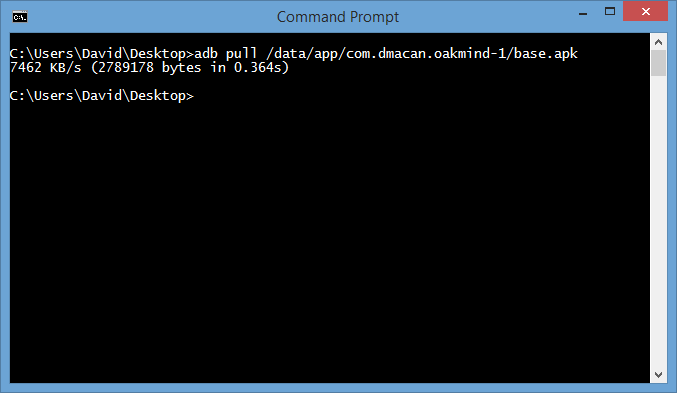

Reverse engineering .apk datoteka
Obradili: Huskanović Alen, Macan David Ante
Sadržaj |
Android
Android je najpopularniji mobilni operacijski sustav pod vlasništvom Google-a. Najpopularniji servis za distribuciju mobilnih aplikacija za Android, Google Play, ima preko 1.3 milijuna aplikacija (kolovoz 2014.). Svaka od tih aplikacija morala je prvo proći Googleovu kontrolu kvalitete prije nego što je bila objavljena. No unatoč tome i dalje postoji dovoljan broj zloćudnih aplikacija koje su prošle tu kontrolu i dostupne su za preuzimanje. Tu se da naslutiti velik sigurnosni problem kod velike mase korisnika. S druge strane, postoji i velik broj aplikacija koje se mogu exploitati jednostavnim reverse engineering-om (hardkodirani pinovi, autorizacijski / autentikacijski tokeni itd.).
Android application package (APK)
APK je package format korišten za distribuciju i instalaciju aplikacija na Android operacijskom sustavu. Ekvivalenti ovom formatu na različitim OS-ovima su MSI paketi u Windows operacijskom sustavu, te DEB paketi u Debian-based Linux distribucijama. APK datoteka poseban je oblik arhivirane datoteke, kao što je JAR za Java aplikacije. Kako bi se napravila APK datoteka, aplikacija se prvo kompajlira, te se sve njene komponente skupa spajaju u jednu datoteku.
APK datoteka sastoji se od dijelova poput:
- programskog koda (u formatima poput .dex datoteka)
- resursa (slika, stringova, dimenzija…)
- asseta (dodatne datoteke u aplikaciji, poput fontova)
- certifikata
- manifest datoteke
Naziv APK datoteke može biti proizvoljan, uz uvjet da ima .apk ekstenziju
MIME Type APK datoteke: application/vnd.android.package-archive
Direktoriji i datoteke unutar APK-a:
- META-INF
- MANIFEST.MF - Manifest datoteka
- CERT.RSA - certifikat aplikacije
- CERT.SF - popis resursa, te SHA-1 sažetci svakog
- lib - direktorij koji sadrži kompajliran kod specifičan za pojedine arhitekture procesora ili software-layera
- armeabi - datoteke korištene kod ARM procesora
- armeabi-v7a - datoteke korištene kod ARMv7 procesora
- x86 - datoteke korištene kod x86 procesora
- mips - datoteke korištene kod MIPS procesora
- resources.arsc - datoteka koja sadrži pretkompajlirane resurse, poput binary XML datoteka
- res - direktorij koji sadrži sve ostale resurse koji se ne nalaze u resources.arsc
- assets - direktorij koji sadrži “asset” datoteke koje se u aplikaciji dohvaćaju koristeći AssetManager objekt
- AndroidManifest.xml - standardan manifest cijele aplikacije. U njemu se specificiraju minimalni i target API, popis permissiona koje aplikacija zahtjeva od korisnika, naziv aplikacije, naziv defaultnog package-a aplikacije itd.
- classes.dex - datoteka koja sadrži sve klase kompajlirane u .dex format, razumljivom za Dalvik VM unutar Androida.
Reverse engineering
Reverse engineering u software developmentu odnosi se na proces dohvaćanja informacija o programu te njegovim implementacijskim detaljima. Proces reverse engineering-a omogućava analitičaru da razumije konkretnu relaciju između implementacije i funkcionalnosti programa. Optimalan output ovog procesa bio bi originalan izvorni kod aplikacije, ali u pravilu nije baš tako jednostavno. Potrebno je preći još nekoliko prepreka kako bi se uspjelo doći do izvornog koda. Pri “buildanju” apk datoteke iz izvornog koda i resursa, provodi se nekoliko koraka kako bi se došlo do konačnog rezultata - apk datoteke koju korisnik može instalirati na svom Android uređaju. Grafička reprezentacija tog procesa nalazi se na slici ispod:

Proces buildanja Android aplikacije. Izvor: Code Protection in Android
{kind=link}
Disassembling
Dissasembler je alat koji kao input uzima bytecode, odnosno binarni izvršni kod, te proizvodi ekvivalentne mnemonike, odnosno dobiva se bytecode razumljiv za čitanje. Taj rezultat sadrži gotovo identične informacije kao i navedeni binarni izvršni kod. Neki dijelovi (poput adresa instrukcija itd.) nisu ipak prevedeni.
| |
<Dalvik bytecode> | <Mnemonics> | |
| |
|
const /4 v0 , #int 5 // #5 | |
| |
|
const /4 v1 , #int 0 // #0 | |
| |
|
0400 | if-lez v1, 0006 // +0004 |
| |
|
0101 | add-int/lit8 v1, v1, #int 1 // #01 |
| |
|
0009 | add-int/lit8 v0, v0, #int 9 // #09 |
| |
|
return v0 |
Na primjeru iznad, prikazan je output dissasemblera, “dexdump” za jednu kratku metodu. S lijeve strane nalazi se bytecode koji se izvršava. Svaka linija predstavlja točno jednu instrukciju u DVM-u (Dalvik Virtual Machine-u). Značenje svake binarne instrukcije je definirano, ali sintaksu menemonike dissasembler može “samostalno birati”.
Lanac kodiranja i dekodiranja

Lanac kodiranja standardan je proces kod developmenta Android aplikacija, stoga ga nije potrebno previše objašnjavati. Nakon što developer napiše kod, on (pomoću IDE-a ili nekih drugih alata) builda i kompajlira taj kod u Dalvik format, kako bi se mogao pokrenuti na DVM-u (Dalvik Virtual Machine-u). Naposlijetku, aplikacija se kompresira u jednu datoteku potpisuje sa SHA-1 ključem i lozinkom, te je spremna za distribuciju.
U okviru ove teme, puno je interesantnije proučavati lanac dekodiranja. Korisnik prvo treba dohvatiti i otvoriti APK, napraviti konverziju DEX datoteka u JAR, te na kraju dekompajlirati Java kod iz dobivenog JAR-a.
{kind=link}
Dohvaćanje APK-a
Kako bismo mogli raditi reverse engineering nad APK datotekom, moramo ju odnekud dobaviti. APK datoteku možemo dohvatiti na više načina:
- Izravno s uređaja pomoću ADB-a
- Downloadanjem putem googleplay-pythonapi alata
- Downloadanjem s alternativnih izvora koji imaju .apk datoteke
- Hvatanjem prometa prema uređaju (Proxy, Wireshark)
Tools of trade
Reverse engineering APK datoteka postaje sve atraktivnija tema. Iz tog razloga, postoji sve veći broj alata za to. Neki od njih su:
- APKTool
- Alat koji može dekodirati resurse na približno originalan oblik, te ih rebuildati ispočetka s dodanim modifikacijama
- APKStudio
- kompletan IDE za kompajliranje / dekompajliranje APK datoteka
- JEB Decompiler
- profesionalan, komercijalan alat za security analizu Android aplikacija.
- U sebi sadrži mnogo alata vezanih uz reverse engineering i mobilnu forenziku, ali upravo radi te razine profesionalnosti i funkcionalnosti cijena ovog alata nije nimalo mala
- DecompileAndroid online
- najjednostavniji alat za reverse engineering APK datoteka koji smo pronašli. Potrebno je samo uploadati datoteku koju želimo analizirati, a kao rezultat dobijemo .zip datoteku projekta dobivenog reverse engineeringom
- Alat je besplatan i dobar za reverse engineering “na brzinu”
- AndroChef
- profesionalan alat s free trial inačicom za reverse engineering i statičku analizu Java koda u Android aplikaciji.
- Vrlo jednostavan za uporabu
- dex2jar
- Višefunkcionalan alat kojim možemo obrađivati dex klase u .apk datoteci
- Najosnovnija naredba, dex2jar konvertira DEX kod u Java kod i pakira ga unutar .jar datoteke
Primjer reverse engineeringa APK datoteke
U sklopu ovog projekta napraviti ćemo kompletan proces reverse engineeringa APK datoteke, te objasniti sve korake unutar. Za primjer ćemo odabrati aplikaciju OakMind koju je jedan od nas napravio u sklopu svog završnog rada, te je open source, čime se izbjegavaju mnogi potencijalni pravni problemi.
Nakon što smo preuzeli i instalirali aplikaciju na svoj uređaj, možemo preći na idući korak - dohvaćanje APK datoteke preuzete aplikacije. Iako je već objašnjeno da postoji nekoliko načina za dohvat te datoteke, mi smo se odlučili za pristup putem ADB (Android Debug Bridge) alata i konzole. Za taj pothvat, na način kako smo mi to objasnili uređaj treba biti rootan ali budemo u tekstu objasnili na koji način isto možemo napraviti na ne rootanom uređaju. Prvo treba unutar uređaja dozvoliti usb-debugging . Nakon toga, na računalu treba pokrenuti konzolu s ADB-om.
Nakon što je konzola podignuta i spremna za korištenje ADB-a, potrebno je izlistati nazive svih package name-a. To se radi na idući način:
{kind=link}
Ako nismo sigurni koji od naziva package-a pripada aplikaciji koju tražimo, možemo ga uvijek saznati preko Google Play-a. Primjerice, ako ne znamo da je com.dmacan.oakmind naziv package-a za OakMind aplikaciju, možemo to provjeriti gledajući URL aplikacije na Google Play-u: https://play.google.com/store/apps/details?id=com.dmacan.oakmind. Budući da package name mora uvijek biti jedinstven, Google ga koristi kao identifikator aplikacije na Google Play-u. Dalje treba saznati punu lokaciju APK datoteke odabrane aplikacije. Srećom, to se isto jednostavnom naredbom može saznati.

Većina aplikacija nalazi se na putanji /data/app dok se androidove aplikacije koje su bile instalirane na uređaju već kada smo ga kupili (npr... Gmail) na putanji /system/app. Sada znamo da nam se APK datoteka za OakMind nalazi na lokaciji /data/app/com.dmacan.oakmind-1/base.apk. Jedino još preostaje povući tu datoteku s uređaja

{kind=link}
{kind=link}
Ako uredaj nije rootan tada je potrebno pomoću aplikacije koja omogućuje backup na SD karticu (mi smo koristili APKoptic koju je moguće pronaći i skinuti preko Google playa) potrebno napraviti backup aplikacije na SD i zatim dohvatiti apk. Na primjer ako je putanja do apk-a /data/app/com.dmacan.oakmind-1/base.apk tada nakon što napravimo backup apk bude dostupan preko putanje /data/app/com.dmacan.oakmind-1.apk.
Sada imamo APK datoteku nad kojom možemo raditi daljnju obradu. Idući alat koji koristimo za obradu datoteke je ApkTool. Pomoću njega možemo jednom naredbom napraviti decompiling APK datoteke.
{kind=link}
Nakon što je decompiling proces završen, dobivamo iduće datoteke i direktorije:
- assets - direktorij koji sadržava neke datoteke (assete) koje koristimo kroz aplikaciju (npr. fontove)
- original - direktorij koji sadrži nekoliko datoteka, direktorija i poddirektorija deskriptivnih za aplikaciju
- AndroidManifest.xml - Enkodirana Manifest datoteka
- META-INF - direktorij s metapodacima aplikacije
- services - direktorij koji sadrži sve servise koji su se koristili prilikom kompajliranja aplikacije
- CERT.RSA - RSA ključ certifikata aplikacije
- CERT - Certifikat aplikacije
- LICENSE - Licenca aplikacije
- MANIFEST.MF - Manifest aplikacije u kojem se nalazi popis svih resursa, te njihovih SHA1 sažetaka cijele aplikacije
- res - direktorij koji sadrži sve resurse unutar aplikacije
- smali - direktorij koji sadrži sve korištene klase iz aplikacije u SMALI formatu
- unknown - direktorij koji sadrži dodatne datoteke koje se ne mogu svrstati u ostale direktorije
- AndroidManifest.xml - Originalna manifest datoteka aplikacije
- apktool.yml - sadrži dodatne atribute i neke iz manifest datoteke
Nedostatak ApkTool-a je taj da nema Java koda, već se DEX datoteke pretvaraju u SMALI datoteke, koje su čitljivije, ali ih je gotovo nemoguće vraćati u izvorni Java kod bez ikakvih gubitaka. Iz tog razloga ovaj pristup koristimo kako bismo dobili sve iz APK datoteke, OSIM Java koda. Za Java kod zato koristimo alat dex2jar. Iako će, prema službenoj dokumentaciji, dex2jar imati mogućnost i konverzije SMALI koda u Java kod, opet će vjerojatno manje gubitaka biti ako se pretvaraju izravno iz DEX formata. Kako bismo dobili DEX datoteku, potrebno je samo otpakirati APK datoteku kao što bismo to napravili s RAR ili ZIP datotekom. Unutar te datoteke, nalazi se classes.dex datoteka. U njoj je pohranjen cijeli Java kod kompajliran u DEX formatu. Proces dobivanja JAR datoteke od classes.dex vrlo je jednostavan. Nakon što je dex2jar osposobljen za rad u komandnoj liniji, potrebno je samo unijeti iduću naredbu:
{kind=link}
Tako smo dobili classes_dex2jar.jar datoteku koja sadrži sve .class datoteke korištene u aplikaciji. Sad još jedino preostaje dekompajlirati .jar datoteku. Alat koji ćemo koristiti za to u ovom primjeru zove se Java Decompiler i postoji još hrpa njemu sličnih alata, budući da je dekompajliranje Java koda već dugo poznato područje. Da ne kompliciramo s dodavanjem pluginova za razvojna okruženja kao što su Eclipse, IntelliJ i Android Studio, uzeti ćemo JD-GUI inačicu koja je standalone java dekompajler. Nakon što pokrenemo jd-gui.exe, potrebno je samo odabrati .jar datoteku koju želimo i dobijemo uvid u cijeli kod.
{kind=link}
Naravno, dobiveni kod nije identičan izvornom kodu, ali vrlo dobro ga prikazuje, te je iz ovakvog koda jednostavno mnogo toga saznati. Na primjeru OakMind aplikacije, vrlo je jednostavno analizirati cijeli kod i otkriti što koji dio koda zapravo radi. Zato tu dolazi do potrebe za dodatnim sigurnosnim mjerama poput obfuskacije.
Bitno je napomenuti da nije potrebno koristiti ApkTool da bi se dobio .dex format pa zatim dex2jar da bi iz toga dobili .jar zato što je moguće preko dex2jar odmah napraviti cijeli postupak s jednom naredbom, također napominjemo da je dex2jar.bat zastarjela skripta, te se preporučuje korištenje d2j-dex2jar.bat skripta:
{kind=link}
Dodatna analiza
Za pravilan reverse engineering nije dovoljno samo pretvoriti apk u nešto čitljivo čovjeku već je potrebno detaljno analizirati cijeli apk kako bi se moglo u potpunosti zaključiti kako je aplikacija napravljena i koja logika stoji iza njezinog razvoja. Jedan od načina za detaljnijom analizom je omogućen od strane googla tako sto ADB (Android Debug Bridge) sadrži alat aapt koji nam omogućuje da iz apk-a dobijemo jednu datoteku koja sadrži popis klasa, aktivnosti, xml-a, slika, resursa te možda najkorisnije sadrži mapirane resurse sa njihovim identifikatorima. Zašto smo naveli ovo kao najvažnije? Nakon sto pretvorimo apk u izvorni kod pojedina mjesta u kodu gdje se developer referencirao na neki od resursa umjesto naziva resursa sadrže identifikator u decimalnom zapisu npr...
return R.layout.fragment_about.xml
će u pretvorenom kodu izgledati ovako
return 2130903082
Što je nečitljivo čovjeku jer zapravo napadač ne može znati koji je resurs uistinu vraćen u tom dijelu koda. Ali naime sada taj decimalni broj je potrebno pretvoriti u heksadecimalnu vrijednost i samo potražiti tu vrijednost u izgeneriranoj datoteci od aapt-a jer će tamo pisati ovako:
spec resource 0x7f03002a com.dmacan.oakmind:layout/fragment_about: flags=0x00000000
te prema tome vrlo jednostavno možemo zaključiti da je ta linija vratila resurs fragment_about.xml
Info datoteka se generira pomoću aapt-a pomoću sljedeće komande:
{kind=link}
Santoku Linux distribucija
Santoku je besplatna i open source linux distribucija namijenjena mobilnoj forenzici, mobilnim virusima te mobilnoj sigurnosti. Santoku uz mnoštvo alata i skripta za mobilnu forenziku sadrži nekolicinu alata za reverse engineering apk-a. Na linuxima je instalirano cijelo development okruženje za razvoj aplikacija za Android, te je tako isto preinstaliran android SDK pa su sve naredbe za ADB dostupne iz shella bez obzira u kojem direktoriju se nalazimo. Za primjer ovo što smo gore objasnili kako napraviti reverse engineering pomoću dex2jar-a i APKToola se na Santoku radi na idući način:
{kind=link}
Prva naredba je pretvorila apk u jar, a druga je otvorila jar u GUI-u kao što je to ranije u radu prikazano. Kao što možete vidjeti s jako malo truda je na Santoku napravljen veliku posao.
Santoku linux sadrži jedan projekt koji se naziva Androguard, a napravljen je u pythonu i ima mnoštvo korisnih skripti za analizu apk-a.
Jedna od tih skripti se naziva androlyze.py koji omogućava jednostavnu i detaljnu analizu sadržaja apk datoteke. Prvo je potrebno otvoriti njegov shell tj. ipython shell te time dobijemo interaktivni shell gdje radimo obradu apk-a.
{kind=link}
Sada se mogu raditi razne obrade npr.. može se ispisati popis metoda, popis klasa, popis dozvola, pretraživati reference...
{kind=link}
Naravno ovaj tool Androguard je namijenjen za provjeru sadrži li apk nekakav virus ili radi ono što ne bi trebao, pa nećemo s njime ići u detalje.
Postoji skripta androapkinfo.py koja vraća iste podatke kao to što radi aapt, a koristi se preko naredbe
./androapkinfo.py -i com.dmacan.oukmind-1.apk
Jedna od zanimljivijih skripti je androdd jer kao izlaz daje graf napravljen od svih metoda unutar svih klasa, a koristi se pomoću naredbe:
./androdd -i com.dmacan.oukmind-1.apk -o output
s time da je output izlazni direktorij, a ne datoteka.
U ovome radu su objašnjeni samo neki od alata koji se nalaze na ovoj distribuciji linuxa (nalaze se i oni koji su objašnjeni ranije koje smo na windowsima koristili) ali postoje i alati za izradu imagea od android-a analiza trenutnih procesa, pa čak i skripte koje rade usporedbe dva apk-a.
Zaštita od reverse engineeringa
Izravna, 100% zaštita ne postoji u ovom slučaju. Radi toga, potrebno je poduzimati dodatne mjere zaštite, kako bi se sam proces analize koda otežao. Jedna od popularnijih mjera za tu namjenu je obfuskacija koda. Obfuskacijom Java kod postaje teško čitljiv i razumljiv, te je potrebno puno više vremena i napora kako bi ga se moglo analizirati.
Još jedna od mjera koju je dobro poduzeti odnosi se na kvalitetno strukturiranje sadržaja i koda aplikacije, te prihvaćanje dobre prakse vezane uz sigurnost pri developmentu Android aplikacija. Ponekad je također dobro navoditi se pravilom “tankog klijenta”, odnosno prenijeti dio obrade na poslužitelj, te tako pomoću black box metode dobiti rezultat natrag.
Treći način dodavanja mjera zaštite je korištenje nativnog C++ koda unutar aplikacije. Odnosno, dio koda se može napisati u C++ jeziku, kompajlirati i onda samo pozivati po potrebi unutar Java koda. Naravno, i C++ kod moguće je dekompajlirati, tako da niti ova metoda nije neprobojna.
Jedan od alata koji developerima automatizacijom pokušava zaštititi kod nekim od ovih gore sigurnosnih mjera naziva se ProGuard. Moguće ga je integrirati u razvojna okruženja Android Studio i Eclipse, te pravilnom konfiguracijom možemo odabrati da naša aplikacija sadrži isključivo one klase koje se koriste prilikom rada te aplikacije. Naposlijetku, ProGuard nudi mogućnost automatske obfuskacije koda, kako se developeri time ne bi trebali dodatno zamarati.